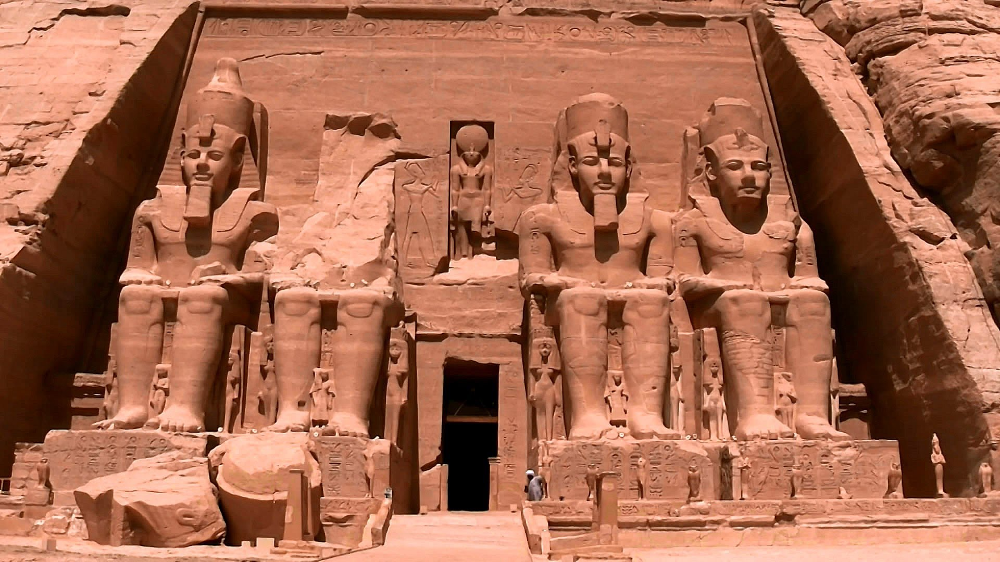
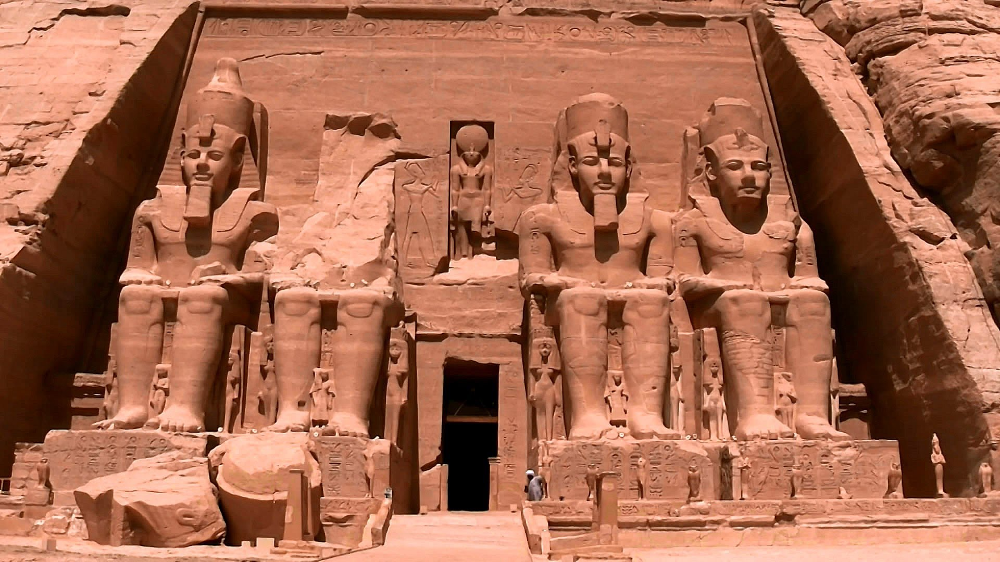
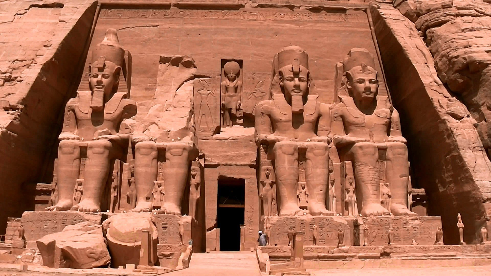
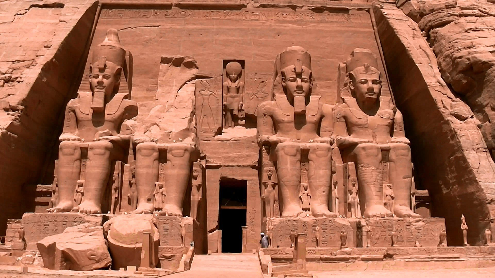

Mare, plaje private cu nisip fin, scufundari, surf, deşert pentru aventurieri, piramide, temple, morminte şi misterele faraonilor.
Numele oficial al Egiptului este: Republica Arabă Egipt (Al Jumhuriya Misr al Arabiya), cu capitala Cairo - cel mai mare oraş din Africa. Egiptul este republică multipartidă democrată, împărţită în patru regiuni la randul lor împărţite în alte 27 guvernorate. Steagul ţării, este în culorile Pan-Arabe (benzi orizontale negru, alb, rosu), iar emblema din centru este şoimul lui Saladin, care este şi stema ţarii, adaugată la steag în anul 1984.
Populaţia Egiptului este de aproximativ 80 millioane de locuitori în majoritate arabi de origine hamitică-estică, dar şi de beduini. Populaţia este concentrată în Valea Nilului, delta Nilului si litoralul marilor Mediterana si Rosie. Orasele cele mai mari au o populatie de peste 1 milion de locuitori, cum este si capitala Cairo cu aprox. 20 millioane locuitori, Alexandria in delta Nilului cu 4.1 milioane de locuitori, Aswan 1.1 milioane de locuitori.
Din punct de vedere religios 85% sunt musulmani sunniţi, iar 10% creştini copţi, 5% alte religii: greco ortodocşi, romano-catolici, protestanti, biserici armeneşti, evrei (numar foarte mic).
Regularitatea și bogăția revărsărilor Nilului, precum și o oarecare izolare determinată de deșerturile din est și vest, au condus la dezvoltarea uneia dintre cele mai importante civilizații ale antichității. Pe Valea Nilului, strânsă între maluri înalte și stâncoase, s-a făurit, cu multe milenii înaintea erei noastre, o veche civilizație a lumii mediteraneene, aceea a Egiptului Antic. Ea ne înfățișează cel mai vechi stat din lume, anterior tuturor celorlalte, înzestrat cu o administrație, o fiscalitate, o justiție și o armată comparabile cu cele ce-au luat naștere mai apoi în țările de pe toate continentele, înainte și după era noastră. Dar lumea Egiptului antic a zămislit o cultură spirituală scânteietoare pe care o admirau grecii vechi și romanii care se minunau, precum fac azi mulțimile de turiști, să contemple templele, piramidele sau obeliscurile înălțate de faraoni și supușii lor.
Iubitorii apei şi soarelui se pot bucura de plajele de la Marea Mediterana (cu oraşele Alexandria, Damietta, PortSaid, MarsaMatruh) şi de la Marea Roşie (de pe coasta Africii cu staţiunea Hurghada, ElGouna, Makadi, Safaga, MarsaAlam, ElQusier şi cu staţiunile moderne din peninsula Sinai, Sharm El Sheikh, Dahab, Nuweiba, Taba).
Oazele din deşertul Libian: Siwa, Dakhla, Kharga, Bahareya îl propulsează pe vizitatorul european într-un univers exotic, de neuitat.
Informaţii turistice
Informaţii necesare pentru o vacanţă reuşită!
Condiţii de intrare în ţară Pentru cetăţenii români este nevoie de paşaport şi viză turistică. Viza se poate obţine şi la sosire pe aeroport (taxă viză: 15 USD/pers.). Reguli referitoare la introducerea bunurilor în ţară Unui turist i se permite să intre în ţară cu 250 gr. de tutun sau 50 de ţigări de foi, 1 litru de alcool şi bunurile personale. Animalele trebuie să aibă un certificat veterinar şi un certificat antirabic. Achiziţiile de alcool din vamă (3 sticle pe persoană) pot fi făcute timp de 48 ore din momentul sosirii la porturile-vamă sau la magazinele fără taxe pe valoarea adăugată din Cairo, Luxor, Sharm El-Sheikh sau Hurghada.
Fus orar Fusul orar este +2 faţă de GMT, excepţii în timpul Ramadanului.
Ambasada României în Republica Arabă Egipt Adresă: 6, El Kamel Mohamed Street, Zamalek, Cairo Telefon: (00202)2736.01.07 Fax: (00202) 2736.08.51 Ambasador : DL. Gheorghe DUMITRU
Ambasada Egiptului în România Cancelaria: 010407 Bucuresti, B-dul Dacia Nr.67, Sector 1 Telefon: (0040-21) 211.09.38, 211.09.39 Fax: (0040-21) 210.03.37 E-mail: embassy.bucharest@mfa.gov.eg Program de lucru ambasadă: luni-vineri 10.00-15.00 Program de lucru pentru vize: luni si joi 10.00-14.30
Comunicaţiile Internet: la hoteluri, cafenele sau restaurante este WIFI cu plată sau gratuit în caz de consumaţie. Apeluri telefonice: apelurile internaţionale sunt destul de scumpe. Cele mai ieftine apeluri pot fi făcute de pe telefoane publice, cu cartele de 15-30 lire (3-6 impulsuri în România); Se pot cumpara carduri SIM pentru telefon mobil, valabile 1 luna. Operatorii de telefonie mobila sunt: Mobinil si Vodafon. Apeluri din România in Egipt: se formeză prefixul Egiptului (0020) + numărul.
Limba Limba oficială este araba. Ca în orice ţară arabă există o diferenţă între limba arabă literară şi cea vorbită. Dialectele variază de la o regiune la alta. În zonele turistice şi în oraşe se mai vorbeşte engleză, rusă, germană, italiană.
Electricitatea Reteaua electrică a Egiptului funcţionează în sistem 220 V cu prize europene. Dacă aveţi echipamente electronice (cameră foto/video, telefon mobil, laptop) care necesită încărcare specială este recomandat să luaţi cu Dvoastră un adaptor.
Bani şi cumpărături Moneda locală este lira egipteană (LE – egyptian pound), moneda de schimb este piastrul (PTS), (1 LE = 100 PTS).
Bacşiş Aproape pentru orice serviciu se acceptă/se aşteaptă bacşiş. Este un sistem instituţionalizat, unul din condiţiile de bază pentru a se descurca în diferitele situaţii. Orice fel de problemă poate fi rezolvat mai uşor dacă pregătiţi "o mică atenţie" (preferat valută).
Program de lucru Birourile administrative şi băncile sunt deschise în general de la ora 09:00 pana la 14:00, excepţie făcând zilele de vineri, sâmbăta (zile libere) şi sărbătorile legale. Majoritatea magazinelor sunt deschise de la ora 10:00 – 22:00. Orarul se poate schimba în timpul Ramadanului.
Servicii medicală Vaccinarea nu este necesară, doar în cazul persoanelor care au petrecut un timp, nu mai mult de şase zile într-o zonă afectată de coleră sau febră tifoidă. Recomandare: să nu plecaţi din România fără asigurare medicală! România nu are tratat semnat cu Egipt, cu privire la problemele medicale, aşa că în cazul în care nu dispuneţi de asigurare medicală costul eventualelor vizite/tratamente medicale trebuie achitat pe loc.
Seif Siguranţa în ţară este relativ bună, dar la fiecare hotel este seif şi este recomandat să solicitaţi/folosiţi seiful din cameră sau de la receţie (în majoritatea hotelurilor este gratis). Să păstraţi în seif bijuteriile, banii şi documentele de călătorie. În cazul pierderii documentelor de călătorie, să vă adresaţi imediat Ambasadei Române din Egipt. Să vă asigurați că dispuneţi de resursele necesare deplasării la reprezentanţa diplomatică a României şi taxelor consulare, nici hotelul, nici ambasada şi nici agenția de turism nu-şi asumă pentru eventualele costuri.
Cazare Clasificarea unităţilor de cazare diferă de standardele europene.
În porturi, navele sunt ancorate paralel, astfel îmbarcarea se face prin traversarea altor nave. Zgomotul motoarelor si muzica programelor distractive pot fi deranjante seara. Caracteristicile descrise la hoteluri sunt valabile şi la navele de croazieră. Cabinele sunt de dimensiuni mai mici decât o cameră normală de hotel.